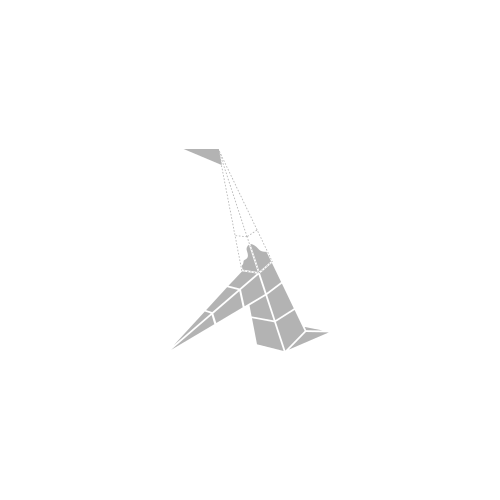
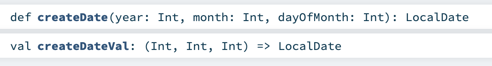

class: center, middle <a href="https://github.com/fp-tower/foundation"> <img src="img/solid-color-logo.svg" alt="logo" style="width:800px;"/> </a> --- layout: true <div class="footer"> <a href="https://github.com/fp-tower/foundation">  </a> </div> --- # Plan <br> .large[ * Deep dive into function features * Functional programming patterns * Pure function and functional subset ] --- # Functions .pull-left[ ## Val function (Lambda) ```scala val replicate: (Int, String) => String = (n: Int, text: String) => ... ``` ] .pull-right[ ## Def function (Method) ```scala def replicate(n: Int, text: String): String = ... ``` ] --- # Functions .pull-left[ ## Val function (Lambda) ```scala val replicate: (Int, String) => String = (n: Int, text: String) => ... ``` <br> ```scala replicate(3, "Hello ") // res1: String = "Hello Hello Hello " ``` ] .pull-right[ ## Def function (Method) ```scala def replicate(n: Int, text: String): String = ... ``` <br> ```scala replicate(3, "Hello ") // res3: String = "Hello Hello Hello " ``` ] --- # Val function (Lambda or anonymous function) <br> ```scala (n: Int, text: String) => List.fill(n)(text).mkString ``` -- <br> ```scala 3 "Hello World!" User("John Doe", 27) ``` --- # Val functions are ordinary objects <br> ```scala val replicate = (n: Int, text: String) => List.fill(n)(text).mkString ``` <br> ```scala val counter = 3 val message = "Hello World!" val john = User("John Doe", 27) ``` -- <br> ```scala val repeat = replicate ``` --- # Val functions are ordinary objects <br> ```scala val numbers = List(1,2,3) // numbers: List[Int] = List(1, 2, 3) val functions = List((x: Int) => x + 1, (x: Int) => x - 1, (x: Int) => x * 2) // functions: List[Int => Int] = List(<function1>, <function1>, <function1>) ``` -- <br> ```scala functions(0)(10) // res10: Int = 11 functions(2)(10) // res11: Int = 20 ``` --- # Val function desugared <br> ```scala val replicate: (Int, String) => String = (n: Int, text: String) => List.fill(n)(text).mkString ``` --- # Val function desugared <br> ```scala val replicate: (Int, String) => String = (n: Int, text: String) => List.fill(n)(text).mkString ``` <br> <br> ```scala val replicate: Function2[Int, String, String] = (n: Int, text: String) => List.fill(n)(text).mkString ``` --- # Val function desugared <br> ```scala val replicate: (Int, String) => String = (n: Int, text: String) => List.fill(n)(text).mkString ``` <br> <br> ```scala val replicate: Function2[Int, String, String] = new Function2[Int, String, String] { def apply(n: Int, text: String): String = List.fill(n)(text).mkString } ``` -- ```scala replicate.apply(3, "Hello ") // res17: String = "Hello Hello Hello " replicate(3, "Hello ") // res18: String = "Hello Hello Hello " ``` --- # Def function (Method) <br> ```scala def replicate(n: Int, text: String): String = List.fill(n)(text).mkString ``` -- <br> ```scala List(replicate) // error: missing argument list for method replicate in class App9 // Unapplied methods are only converted to functions when a function type is expected. // You can make this conversion explicit by writing `replicate _` or `replicate(_,_)` instead of `replicate`. ``` --- # Def function (Method) <br> ```scala def replicate(n: Int, text: String): String = List.fill(n)(text).mkString ``` <br> ```scala List(replicate _) // res22: List[(Int, String) => String] = List(<function2>) ``` -- <br> ```scala val replicateVal = replicate _ // replicateVal: (Int, String) => String = <function2> ``` --- # Def function (Method) <br> ```scala def replicate(n: Int, text: String): String = List.fill(n)(text).mkString ``` <br> ```scala List(replicate): List[(Int, String) => String] ``` <br> ```scala val replicateVal: (Int, String) => String = replicate ``` --- # Function arguments <br> ```scala import java.time.LocalDate def createDate(year: Int, month: Int, dayOfMonth: Int): LocalDate = ... ``` <br> ```scala createDate(2020, 1, 5) // res25: LocalDate = 2020-01-05 ``` -- ```scala createDate(dayOfMonth = 5, month = 1, year = 2020) // res26: LocalDate = 2020-01-05 ``` --- # Function arguments <br> ```scala import java.time.LocalDate def createDate(year: Int, month: Int, dayOfMonth: Int): LocalDate = ... ``` <br> ```scala val createDateVal: (Int, Int, Int) => LocalDate = (year, month, dayOfMonth) => ... ``` ```scala createDate(2020, 1, 5) // res27: LocalDate = 2020-01-05 createDateVal(2020, 1, 5) // res28: LocalDate = 2020-01-05 ``` --- <br> ## IDE <img src="img/ide-doc.png" alt="IDE documentation" style="width:800px;"/> -- ## Javadoc  --- # Summary <br> .large[ * Val functions are an ordinary objects * Use def functions for API * Easy to convert def to val ] --- class: center, middle # Def vs Val functions details --- # Def function (Method) .pull-left[ ## In Scala ```scala def replicate(n: Int, text: String): String ``` ] .pull-right[ ## In Java ```java String replicate(int n, String text) ``` ] --- # Conciseness <br> .pull-left[ ```scala def plus(x: Int, y: Int): Int = x + y ``` ] .pull-right[ ```scala val plus: (Int, Int) => Int = (x: Int, y: Int) => x + y ``` ] --- # Conciseness <br> .pull-left[ ```scala def plus(x: Int, y: Int): Int = x + y ``` <br> ```scala def plus(x: Int, y: Int) = x + y ``` ] .pull-right[ ```scala val plus: (Int, Int) => Int = (x: Int, y: Int) => x + y ``` <br> ```scala val plus = (x: Int, y: Int) => x + y ``` ] --- # Conciseness <br> .pull-left[ ```scala def plus(x: Int, y: Int): Int = x + y ``` <br> ```scala def plus(x: Int, y: Int) = x + y ``` ] .pull-right[ ```scala val plus: (Int, Int) => Int = (x: Int, y: Int) => x + y ``` <br> ```scala val plus = (x: Int, y: Int) => x + y ``` <br> ```scala val plus: (Int, Int) => Int = (x, y) => x + y ``` ] --- # Conciseness <br> .pull-left[ ```scala def plus(x: Int, y: Int): Int = x + y ``` <br> ```scala def plus(x: Int, y: Int) = x + y ``` ] .pull-right[ ```scala val plus: (Int, Int) => Int = (x: Int, y: Int) => x + y ``` <br> ```scala val plus = (x: Int, y: Int) => x + y ``` <br> ```scala val plus: (Int, Int) => Int = _ + _ ``` ] --- # Definition order <br> ```scala val repeat = replicate val replicate: (Int, String) => String = (n, text) => List.fill(n)(text).mkString ``` -- <br> ```scala // warning: Reference to uninitialized value replicate // val repeat = replicate ``` ```scala repeat(3, "Hello ") // java.lang.NullPointerException // at repl.Session$App43$$anonfun$117.apply(1-Function.html:444) // at repl.Session$App43$$anonfun$117.apply(1-Function.html:444) ``` --- # Definition order <br> ```scala def repeat(n: Int, text: String): String = replicate(n, text) def replicate(n: Int, text: String): String = List.fill(n)(text).mkString ``` <br> ```scala repeat(3, "Hello ") // res45: String = "Hello Hello Hello " ``` --- # Definition order <br> ```scala lazy val repeat = replicate lazy val replicate: (Int, String) => String = (n, text) => List.fill(n)(text).mkString ``` <br> ```scala repeat(3, "Hello ") // res47: String = "Hello Hello Hello " ``` --- # Unimplemented functions <br> ```scala def repeat(n: Int, text: String): String = ??? ``` -- <br> ```scala def ??? : Nothing = throw new NotImplementedError ``` --- # Unimplemented functions <br> ```scala def repeat(n: Int, text: String): String = ??? ``` <br> ```scala val replicate: (Int, String) => String = ??? // scala.NotImplementedError: an implementation is missing // at scala.Predef$.$qmark$qmark$qmark(Predef.scala:347) // at repl.Session$App49$$anonfun$120.apply$mcV$sp(1-Function.html:512) // at repl.Session$App49$$anonfun$120.apply(1-Function.html:510) // at repl.Session$App49$$anonfun$120.apply(1-Function.html:510) ``` --- # Unimplemented functions <br> ```scala def repeat(n: Int, text: String): String = ??? ``` <br> ```scala lazy val replicate: (Int, String) => String = ??? ``` --- # Functions as input <br> ```scala def filter(text: String, predicate: Char => Boolean): String = ... ``` -- <br> ```scala val text = "Hello World!" ``` ```scala filter(text, (c: Char) => c.isUpper) // res51: String = "HW" filter(text, (c: Char) => c.isLetter) // res52: String = "HelloWorld" ``` --- .h1[# Reduce code duplication] <br> .pull-left[ ```scala def upperCase(text: String): String = { val characters = text.toArray for (i <- 0 until text.length) { characters(i) = characters(i).toUpper } new String(characters) } ``` ```scala upperCase("Hello") // res53: String = "HELLO" ``` ] .pull-right[ ```scala def lowerCase(text: String): String = { val characters = text.toArray for (i <- 0 until text.length) { characters(i) = characters(i).toLower } new String(characters) } ``` ```scala lowerCase("Hello") // res54: String = "hello" ``` ] --- # Capture pattern <br> .pull-left[ ```scala def map(text: String, update: Char => Char): String = { val characters = text.toArray for (i <- 0 until text.length) { characters(i) = update(characters(i)) } new String(characters) } ``` <br> ```scala def upperCase(text: String): String = map(text, c => c.toUpper) def lowerCase(text: String): String = map(text, c => c.toLower) ``` ] -- .pull-right[ ```scala test("map does not change the size") { forAll(( text : String, update: Char => Char ) => map(text, update).length == text.length ) } ``` ] --- background-image: url(img/function/file-processing.svg) # File processing --- background-image: url(img/function/file-processing-fail.svg) # File processing --- background-image: url(img/function/file-processing-fail-safe.svg) # File processing --- # Write tricky code once <br> ```scala import scala.io.Source def usingFile(fileName: String, processing: Iterator[String] => Int): Int = { val source = Source.fromResource(fileName) try { processing(source.getLines()) } finally { source.close() } } ``` -- ```scala val countLines: Iterator[String] => Int = lines => lines.size ``` ```scala val countWords: Iterator[String] => Int = lines => ... ``` --- # Write tricky code once <br> ```scala import scala.io.Source def usingFile(fileName: String, processing: Iterator[String] => Int): Int = { val source = Source.fromResource(fileName) try { processing(source.getLines()) } finally { source.close() } } ``` .pull-left[ ```scala usingFile("50-word-count.txt", countLines) // res57: Int = 2 ``` ] .pull-right[ ```scala usingFile("50-word-count.txt", countWords) // res58: Int = 50 ``` ] --- class: center, middle # Exercise 1: Functions as input `exercises.function.FunctionExercises.scala` --- # Functions as output <br> ```scala def truncate(digits: Int, number: Double): String = BigDecimal(number) .setScale(digits, BigDecimal.RoundingMode.FLOOR) .toDouble .toString ``` <br> ```scala truncate(2, 0.123456789) // res59: String = "0.12" truncate(5, 0.123456789) // res60: String = "0.12345" ``` --- # Functions as output <br> ```scala def truncate(digits: Int, number: Double): String = BigDecimal(number) .setScale(digits, BigDecimal.RoundingMode.FLOOR) .toDouble .toString def truncate2D(number: Double): String = truncate(2, number) def truncate5D(number: Double): String = truncate(5, number) ``` <br> ```scala truncate2D(0.123456789) // res62: String = "0.12" truncate5D(0.123456789) // res63: String = "0.12345" ``` --- # Functions as output .pull-left[ ```scala def truncate(digits: Int, number: Double): String ``` ```scala truncate(2, 0.123456789) // res65: String = "0.12" ``` <br> ] .pull-right[ ```scala def truncate(digits: Int): Double => String ``` ```scala truncate(2)(0.123456789) // res67: String = "0.12" ``` <br> ] -- ## Currying ```scala val function3: (Int , Int , Int) => Int val function3: Int => Int => Int => Int ``` --- # Partial function application <br> ```scala def truncate(digits: Int): Double => String = (number: Int) => ... ``` <br> ```scala val truncate2D = truncate(2) val truncate5D = truncate(5) ``` -- <br> ```scala truncate2D(0.123456789) // res68: String = "0.12" truncate5D(0.123456789) // res69: String = "0.12345" ``` --- # Syntax ## Uncurried ```scala def truncate(digits: Int, number: Double): String ``` ## Curried ```scala def truncate(digits: Int)(number: Double): String def truncate(digits: Int): Double => String val truncate: Int => Double => String ``` --- # Conversion (Currying) <br> ```scala def truncate(digits: Int, number: Double): String ``` -- <br> ```scala truncate _ // res71: (Int, Double) => String = <function2> ``` -- ```scala (truncate _).curried // res72: Int => Double => String = scala.Function2$$Lambda$5037/0x0000000101a2e840@e8263a2 ``` --- class: center, middle # Exercise 2: Functions as output `exercises.function.FunctionExercises.scala` --- .pull-left[ # Types <br> ```scala Int String User ``` <br> ```scala val counter: Int = 5 val message: String = "Welcome!" val alice: User = User("Alice", 23) ``` ] .pull-right[ # Parametric types <br> ```scala List Map JsonEncoder ``` <br> ```scala val numbers: List = List(1, 2, 3) // error: type List takes type parameters // val numbers: List = List(1, 2, 3) // ^^^^ ``` ] -- .pull-right[ ```scala val numbers: List[Int] = List(1, 2, 3) // numbers: List[Int] = List(1, 2, 3) val words: List[String] = List("Hello", "World") // words: List[String] = List("Hello", "World") ``` ] --- # Functions <br> ```scala def map(s: String, f: Char => Char): String = ... ``` <br> ```scala def map(list: List[Int] , f: Int => Int ): List[Int] = ... def map(list: List[String], f: String => String): List[String] = ... ``` -- <br> ```scala def map(list: List[Int] , f: Int => String): List[String] = ... ``` --- # Parametric functions <br> ```scala def map[To](list: List[Int], f: Int => To): List[To] = ... ``` <br> ```scala map(List(1,2,3,4), (x: Int) => x + 1) // res74: List[Int] = List(2, 3, 4, 5) map(List(1,2,3,4), (x: Int) => x / 2.0) // res75: List[Double] = List(0.5, 1.0, 1.5, 2.0) ``` --- # Parametric functions <br> ```scala def map[From, To](list: List[From], f: From => To): List[To] = ... ``` <br> ```scala map(List(1,2,3,4), (x: Int) => x / 2.0) // res77: List[Double] = List(0.5, 1.0, 1.5, 2.0) map(List("Hello", "World"), (x: String) => x.toCharArray) // res78: List[Array[Char]] = List( // Array('H', 'e', 'l', 'l', 'o'), // Array('W', 'o', 'r', 'l', 'd') // ) ``` -- <br> .center[ ## #1 Benefit: code reuse ] --- # Interpretation <br> ```scala def map[From, To](list: List[From], f: From => To): List[To] = ... ``` -- <br> .medium[ The callers of `map` choose `From` and `To` ] ```scala map[Int, String](List(1,2,3), (x: Int) => x.toString) // res79: List[String] = List("1", "2", "3") ``` --- # How can we implement `map`? <br> ```scala def map[From, To](list: List[From], f: From => To): List[To] = ... ``` -- <br> .medium[ * Always return `List.empty` (`Nil`) ] -- .medium[ * Somehow call `f` on the elements of `list` ] --- # Does it compile? <br> ```scala def map[From, To](list: List[From], f: From => To): List[To] = List(1,2,3) ``` --- # Does it compile? <br> ```scala def map[From, To](list: List[From], f: From => To): List[To] = List(1,2,3) On line 3: error: type mismatch; found : Int(1) required: To ``` -- <br> ```scala def map(list: List[Int], f: Int => Int): List[Int] = List(1,2,3) ``` -- <br> .center[ ## #2 Benefit: require less tests ] --- class: center, middle # Exercises 3: Parametric functions `exercises.function.FunctionExercises.scala` --- # Type inference <br> ```scala case class Pair[A](first: A, second: A) { def zipWith[B, C](other: Pair[B], combine: (A, B) => C): Pair[C] = ... } ``` <br> ```scala Pair(0, 2).zipWith(Pair(3, 3), (x: Int, y: Int) => x + y) // res81: Pair[Int] = Pair(3, 5) ``` -- ```scala Pair(0, 2).zipWith(Pair(3, 3), (x, y) => x + y) // error: missing parameter type // Pair(0, 2).zipWith(Pair(3, 3), (x, y) => x + y) // ^ ``` --- # Type inference <br> ```scala case class Pair[A](first: A, second: A) { def zipWith[B, C](other: Pair[B])(combine: (A, B) => C): Pair[C] = ... } ``` <br> ```scala Pair(0, 2).zipWith(Pair(3, 3))((x, y) => x + y) // res84: Pair[Int] = Pair(3, 5) ``` -- <br> ```scala Pair(0, 2).zipWith(Pair(3, 3))(_ + _) // res85: Pair[Int] = Pair(3, 5) ``` --- # Scala API design <br> ```scala def function[A, B, C](first: A, second: B)(f: (A, B) => C): C ``` --- # Scala API design <br> ```scala def function[A, B, C](first: List[A], second: List[B])(f: (A, B) => C): List[C] ``` --- # Two apparently useless functions <br> .pull-left[ ```scala def identity[A](value: A): A = value ``` <br> ```scala identity(5) // res86: Int = 5 identity("Hello") // res87: String = "Hello" ``` ] .pull-right[ ```scala def constant[A, B](value: A)(discarded: B): A = value ``` <br> ```scala constant(5)("Hello") // res88: Int = 5 constant("Hello")(5) // res89: String = "Hello" ``` ] --- # Two apparently useless functions ```scala object Config { private var flag: Boolean = true def modifyFlag(f: Boolean => Boolean): Boolean = { val previousValue = flag flag = f(previousValue) previousValue } } ``` -- ```scala def toggle(): Boolean = Config.modifyFlag(x => !x) ``` ```scala toggle() // res90: Boolean = true toggle() // res91: Boolean = false ``` --- # Two apparently useless functions ```scala object Config { private var flag: Boolean = true def modifyFlag(f: Boolean => Boolean): Boolean = { val previousValue = flag flag = f(previousValue) previousValue } } ``` ## How would you implement? .pull-left[ ```scala def disable(): Boolean = ... ``` ] --- # Two apparently useless functions ```scala object Config { private var flag: Boolean = true def modifyFlag(f: Boolean => Boolean): Boolean = { val previousValue = flag flag = f(previousValue) previousValue } } ``` ## How would you implement? .pull-left[ ```scala def disable(): Boolean = Config.modifyFlag(_ => false) ``` ] -- .pull-right[ ```scala def disable(): Boolean = Config.modifyFlag(constant(false)) ``` ] --- # Two apparently useless functions ```scala object Config { private var flag: Boolean = true def modifyFlag(f: Boolean => Boolean): Boolean = { val previousValue = flag flag = f(previousValue) previousValue } } ``` ## How would you implement? .pull-left[ ```scala def getFlag: Boolean = ... ``` ] --- # Two apparently useless functions ```scala object Config { private var flag: Boolean = true def modifyFlag(f: Boolean => Boolean): Boolean = { val previousValue = flag flag = f(previousValue) previousValue } } ``` ## How would you implement? .pull-left[ ```scala def getFlag: Boolean = Config.modifyFlag(identity) ``` ] --- # Consistent API <br> ```scala trait Config { def modifyFlag(f: Boolean => Boolean): Boolean def toggle(): Boolean = modifyFlag(x => !x) def disable(): Boolean = modifyFlag(constant(false)) def enable(): Boolean = modifyFlag(constant(true)) def get: Boolean = modifyFlag(identity) } ``` --- # What is the type of `identityVal`? <br> ```scala def identity[A](value: A): A = value ``` <br> ```scala val identityVal = identity _ ``` --- # What is the type of `identityVal`? <br> ```scala def identity[A](value: A): A = value ``` <br> ```scala val identityVal: Nothing => Nothing = identity _ ``` <br> ```scala identityVal(4) // error: type mismatch; // found : Int(4) // required: Nothing ``` --- # What is the type of `identityVal`? <br> ```scala def identity[A](value: A): A = value ``` <br> ```scala val identityVal: Int => Int = identity[Int] _ ``` <br> ```scala identityVal(4) // res97: Int = 4 ``` --- background-image: url(img/function/fold.svg) # Folding --- background-image: url(img/function/fold-left-1.svg) # FoldLeft --- background-image: url(img/function/fold-left-all.svg) # FoldLeft --- .cols[ .fortyfive[ # FoldLeft <br> <br> <br> ```scala def foldLeft[A, B](fa: List[A], b: B)(f: (B, A) => B): B = { var acc = b for (a <- fa) { acc = f(acc, a) } acc } ``` ] .fortyfive[  ]] --- .cols[ .fortyfive[ # FoldLeft <br> <br> <br> ```scala def sum(xs: List[Int]): Int = foldLeft(xs, 0)(_ + _) ``` ```scala sum(List(2,3,10,4)) // res99: Int = 19 ``` ] .fortyfive[  ]] --- .cols[ .fortyfive[ # FoldLeft <br> <br> <br> ```scala def reverse[A](xs: List[A]): List[A] = foldLeft(xs, List.empty[A])((acc, a) => a :: acc) ``` ```scala reverse(List(1,2,3,4)) // res100: List[Int] = List(4, 3, 2, 1) ``` ] .fortyfive[  ]] --- class: center, middle # Exercise 3c-f `exercises.function.FunctionExercises.scala` --- background-image: url(img/function/fold.svg) # Folding --- background-image: url(img/function/fold-right-1.svg) # FoldRight --- background-image: url(img/function/fold-right-lazy-1.svg) # FoldRight --- background-image: url(img/function/fold-right-lazy-2.svg) # FoldRight is lazy --- .h1[# FoldRight is lazy] .cols[ .fortyfive-middle[ ```scala def foldRight[A, B](xs: List[A], b: B)(f: (A, `=> B`) => B): B = xs match { case Nil => b case h :: t => f(h, `foldRight(t, b)(f)`) } ``` ] .fortyfive[  ]] --- background-image: url(img/function/fold-right-stack-safety.svg) # FoldRight is NOT always stack safe --- # FoldRight replaces constructors ```scala sealed trait List[A] case class Nil[A]() extends List[A] case class Cons[A](head: A, tail: List[A]) extends List[A] ``` ```scala val xs: List[Int] = Cons(1, Cons(2, Cons(3, Nil()))) ``` -- ```scala def foldRight[A, B](list: List[A], `b: B`)(f: `(A, => B) => B`): B foldRight(xs, b)(f) == foldRight(Cons(1, Cons(2, Cons(3, Nil()))), b)(f) == f (1, f (2, f (3, b ))) ``` -- ### Home exercise: How would you "replace constructors" for an Option or a Binary Tree? --- class: center, middle # Finish Exercise 3 `exercises.function.FunctionExercises.scala` --- # Different level of abstractions <br> <br> <br> .center[] --- class: center, middle # Pure function --- background-image: url(img/function/mapping-2.svg) # Pure functions are mappings between two sets --- class: center, middle # Programming function # != # Pure function --- background-image: url(img/function/partial-function.svg) # Partial function --- background-image: url(img/function/exception.svg) # Partial function --- # Partial function ```scala def head(list: List[Int]): Int = list match { case x :: xs => x } ``` ```scala head(Nil) // scala.MatchError: List() (of class scala.collection.immutable.Nil$) // at repl.Session$App101.head(1-Function.html:1155) // at repl.Session$App101$$anonfun$199.apply$mcI$sp(1-Function.html:1164) // at repl.Session$App101$$anonfun$199.apply(1-Function.html:1164) // at repl.Session$App101$$anonfun$199.apply(1-Function.html:1164) ``` --- # Exception ```scala case class Item(id: Long, unitPrice: Double, quantity: Int) case class Order(status: String, basket: List[Item]) def submit(order: Order): Order = order.status match { case "Draft" if order.basket.nonEmpty => order.copy(status = "Submitted") case other => throw new Exception("Invalid Command") } ``` ```scala submit(Order("Delivered", Nil)) // java.lang.Exception: Invalid Command // at repl.Session$App101.submit(1-Function.html:1182) // at repl.Session$App101$$anonfun$200.apply(1-Function.html:1190) // at repl.Session$App101$$anonfun$200.apply(1-Function.html:1190) ``` --- background-image: url(img/function/nondeterministic.svg) # Nondeterministic --- # Nondeterministic ```scala import java.util.UUID import java.time.Instant ``` ```scala UUID.randomUUID() // res102: UUID = c3d2b463-3ced-4147-8a0c-819e8889005e UUID.randomUUID() // res103: UUID = 9e4b75fb-1103-4903-8a9f-9b5d69288f2f ``` ```scala Instant.now() // res104: Instant = 2020-03-19T19:49:49.832395Z Instant.now() // res105: Instant = 2020-03-19T19:49:49.833529Z ``` --- # Mutation ```scala class User(initialAge: Int) { var age: Int = initialAge def getAge: Int = age def setAge(newAge: Int): Unit = age = newAge } val john = new User(24) ``` ```scala john.getAge // res106: Int = 24 john.setAge(32) john.getAge // res108: Int = 32 ``` --- background-image: url(img/function/side-effect-1.svg) # Side effect --- background-image: url(img/function/side-effect-2.svg) # Side effect --- # Side effect ```scala def println(message: String): Unit = ... ``` ```scala val x = println("Hello") // Hello ``` -- ```scala scala> scala.io.Source.fromURL("http://google.com")("ISO-8859-1").take(100).mkString res21: String = <!doctype html><html itemscope="" itemtype="http://schema.org/WebPage" lang="fr"><head> ``` -- ```scala var x: Int = 0 def count(): Int = { x = x + 1 x } ``` --- class: center, middle # A function without side effects only returns a value --- .h1[# Pure function] .large[ * total (not partial) * no exception * deterministic (not nondeterministic) * no mutation * no side effect ] --- class: center, middle # Functional subset = pure function + ... --- background-image: url(img/function/null-1.svg) # Null --- background-image: url(img/function/null-2.svg) # Null --- # Null ```scala case class User(name: String, age: Int) def getAge(user: User): Int = { if(user == null) -1 else user.age } ``` -- <br> ### `null` causes NullPointerException ### We cannot remove `null` from the language (maybe in Scala 3) ### So we ignore null: don't return it, don't handle it --- # Reflection ```scala trait OrderApi { def insertOrder(order: Order): Future[Unit] def getOrder(orderId: OrderId): Future[Order] } ``` ```scala class DbOrderApi(db: DB) extends OrderApi { ... } class OrderApiWithAuth(api: OrderApi, auth: AuthService) extends OrderApi { ... } ``` ```scala def getAll(api: OrderApi)(orderIds: List[OrderId]): Future[List[Order]] = api match { case x: DbOrderApi => ... ❌ case x: OrderApiWithAuth => ... ❌ case _ => ... ❌ } ``` --- # Reflection ```scala trait OrderApi { def insertOrder(order: Order): Future[Unit] def getOrder(orderId: OrderId): Future[Order] } ``` ```scala class DbOrderApi(db: DB) extends OrderApi { ... } class OrderApiWithAuth(api: OrderApi, auth: AuthService) extends OrderApi { ... } ``` ```scala def getAll(api: OrderApi)(orderIds: List[OrderId]): Future[List[Order]] = { if (api.`isInstanceOf[DbOrderApi]`) ... else if(api.`isInstanceOf[OrderApiWithAuth]`) ... else ... } ``` --- # An OPEN trait/class is equivalent to a record of functions ```scala trait OrderApi { def insertOrder(order: Order): Future[Unit] def getOrder(orderId: OrderId): Future[Order] } case class OrderApi( insertOrder: Order => Future[Unit], getOrder : OrderId => Future[Order] ) ``` <br> ### An OrderApi is any pair of functions `(insertOrder, getOrder)` --- # A SEALED trait/class is equivalent to an enumeration ```scala sealed trait ConfigValue object ConfigValue { case class AnInt(value: Int) extends ConfigValue case class AString(value: String) extends ConfigValue case object Empty extends ConfigValue } ``` <br> ### A ConfigValue is either an Int, a String or Empty --- # Any, AnyRef, AnyVal are all OPEN trait <br> ```scala def getTag(any: Any): Int = any match { case x: Int => 1 ❌ case x: String => 2 ❌ case x: ConfigValue => 3 ❌ case _ => -1 ❌ } ``` --- .h1[# Functional subset (aka Scalazzi subset)] .cols[ .fortyfive-middle[ .large[ * total * no exception * deterministic * no mutation * no side effect ]] .fortyfive[ .large[ * no null * no reflection ] ]] --- class: center, middle  .reference-top-left[[@impurepics](https://twitter.com/impurepics)] --- class: center, middle # Exercise 4 `exercises.function.FunctionExercises.scala` --- class: center, middle # Why should we use the functional subset? --- .h1[# 1. Refactoring: remove unused code] .cols[ .fortyfive[ ```scala def hello_1(foo: Foo, bar: Bar) = { `val x = f(foo)` val y = g(bar) `h(y)` y } ``` ] .ten[ ] .fortyfive[ ```scala def hello_2(foo: Foo, bar: Bar) = g(bar) ``` ]] -- ### Counter example ```scala def f(foo: Foo): Unit = upsertToDb(foo) def h(id: Int): Unit = globalVar += 1 ``` --- .h1[# 1. Refactoring: reorder variables] .cols[ .fortyfive[ ```scala def hello_1(foo: Foo, bar: Bar) = { `val x = f(foo)` val y = g(bar) h(x, y) } ``` ] .ten[ ] .fortyfive[ ```scala def hello_2(foo: Foo, bar: Bar): Int = { val y = g(bar) `val x = f(foo)` h(x, y) } ``` ]] -- ### Counter example ```scala def f(foo: Foo): Unit = print("foo") def g(bar: Bar): Unit = print("bar") hello_1(foo, bar) // print foobar hello_2(foo, bar) // print barfoo ``` --- .h1[# 1. Refactoring: extract - inline] .cols[ .fortyfive[ ```scala def hello_extract(foo: Foo, bar: Bar) = { val x = f(foo) val y = g(bar) h(x, y) } ``` ] .ten[ ] .fortyfive[ ```scala def hello_inline(foo: Foo, bar: Bar) = { h(f(foo), g(bar)) } ``` ]] -- ### Counter example ```scala def f(foo: Foo): Boolean = false def g(bar: Bar): Boolean = throw new Exception("Boom!") def h(b1: Boolean, b2:` =>` Boolean): Boolean = b1 && b2 hello_extract(foo, bar) // throw Exception hello_inline (foo, bar) // false ``` --- # 1. Refactoring: extract - inline ```scala import scala.concurrent.Future import scala.concurrent.ExecutionContext.Implicits.global def doSomethingExpensive(x: Int): Future[Int] = Future { ??? } for { x <- doSomethingExpensive(5) y <- doSomethingExpensive(8) // sequential, 2nd Future starts when 1st Future is complete } yield x + y ``` ```scala val fx = doSomethingExpensive(5) val fy = doSomethingExpensive(8) // both Futures start in parallel for { x <- fx y <- fy } yield x + y ``` --- .h1[# 1. Refactoring: de-duplicate] .cols[ .fortyfive[ ```scala def hello_duplicate(foo: Foo) = { val x = f(foo) val y = f(foo) h(x, y) } ``` ] .ten[ ] .fortyfive[ ```scala def hello_simplified(foo: Foo) = { val x = f(foo) h(x, x) } ``` ]] -- ### Counter example ```scala def f(foo: Foo): Unit = print("foo") hello_duplicate(foo) // print foofoo hello_simplified(foo) // print foo ``` --- class: center, middle # Pure function # means # fearless refactoring --- # 2. Local reasoning ```scala def hello(foo: Foo, bar: Bar): Int = { ??? // only depends on foo, bar } ``` --- # 2. Local reasoning ```scala class HelloWorld(fizz: Fizz) { val const = 12.3 def hello(foo: Foo, bar: Bar): Int = { ??? // only depends on foo, bar, const and fizz } } ``` --- # 2. Local reasoning ```scala class HelloWorld(fizz: Fizz) { var secret = null // ❌ def hello(foo: Foo, bar: Bar): Int = { FarAwayObject.mutableMap += "foo" -> foo // ❌ publishMessage(Hello(foo, bar)) // ❌ ??? } } object FarAwayObject { val mutableMap = ??? // ❌ } ``` --- # 3. Easier to test ```scala test("submit") { val item = Item("xxx", 2, 12.34) val now = Instant.now() val order = Order("123", "Checkout", List(item), submittedAt = None) submit(order, `now`) shouldEqual order.`copy`(status = "Submitted", submittedAt = Some(`now`)) } ``` ### Dependency injection is given by local reasoning ### No mutation, no randomness, no side effect --- # 4. Better documentation ```scala def getAge(user: User): `Int` = ??? def getOrElse[A](fa: Option[A])(orElse: `=> A`): A = ??? def parseJson(x: String): `Either[ParsingError`, Json] = ??? def mapOption[`A`, `B`](fa: Option[`A`])(f: `A` => `B`): Option[`B`] = ??? def none: Option[`Nothing`] = ??? ``` --- # 5. Potential compiler optimisations ### Fusion ```scala val largeList = List.range(0, 10000) largeList.map(f).map(g) == largeList.map(f andThen g) ``` ### Caching ```scala def memoize[A, B](f: A => B): A => B = ??? val cacheFunc = memoize(f) ``` --- class: center, middle # What's the catch? --- class: center, middle # With pure function, you cannot __DO__ anything --- # Resources and further study * [Explain List Folds to Yourself](http://data.tmorris.net/talks/list-folds/b30aa0fdff296c731bc5b1c824adf1d02b3b69d9/list-folds.pdf) * [Constraints Liberate, Liberties Constrain](https://www.youtube.com/watch?v=GqmsQeSzMdw) --- class: center, middle # [Module 2: Side Effect](2-SideEffect.html#1) --- # Parametric types <br> .pull-left[ ```scala case class Point(x: Int, y: Int) ``` <br> ```scala Point(3, 4) // res114: Point = Point(3, 4) ``` ] .pull-right[ ```scala case class Pair[A](first: A, second: A) ``` <br> ```scala Pair(3, 4) // res115: Pair[Int] = Pair(3, 4) Pair("John", "Doe") // res116: Pair[String] = Pair("John", "Doe") ``` ] --- # Parametric functions <br> ```scala def swap[A](pair: Pair[A]): Pair[A] = Pair(pair.second, pair.first) ``` ```scala swap(Pair(1, 5)) // res117: Pair[Int] = Pair(5, 1) swap(Pair("John", "Doe")) // res118: Pair[String] = Pair("Doe", "John") ``` --- # Pattern match <br> ```scala def swap[A](pair: Pair[A]): Pair[A] = pair match { case x: Pair[Int] => Pair(x.first + 1, x.second - 1) case x: Pair[String] => Pair(x.first , x.second.reverse) case other => Pair(pair.second, pair.first) } ``` -- ```scala swap(Pair(1, 5)) // res120: Pair[Int] = Pair(2, 4) ``` ```scala swap(Pair("John", "Doe")) // java.lang.ClassCastException: class java.lang.String cannot be cast to class java.lang.Integer (java.lang.String and java.lang.Integer are in module java.base of loader 'bootstrap') // at scala.runtime.BoxesRunTime.unboxToInt(BoxesRunTime.java:99) // at repl.Session$App119.swap(1-Function.html:1434) // at repl.Session$App119$$anonfun$223.apply(1-Function.html:1450) // at repl.Session$App119$$anonfun$223.apply(1-Function.html:1450) ``` --- # Type erasure <br> ```scala def swap(pair: Pair[Any]): Pair[Any] = pair match { case x => Pair(x.first + 1, x.second - 1) case x => Pair(x.first , x.second.reverse) case other => Pair(pair.second, pair.first) } ``` --- # Type erasure is a good thing <sup>TM<sup> <br> ```scala def swap[A](pair: Pair[A]): Pair[A] = ??? ``` > For all type A, `swap` takes a `Pair` of `A` and returns a `Pair` of `A`. --- # 1. Type parameters must be defined before we use them <br> ```scala case class Pair[`A`](first: A, second: A) def swap[`A`](pair: Pair[A]): Pair[A] = Pair(pair.second, pair.first) ``` <br> ```scala def swap(pair: Pair[A]): Pair[A] = Pair(pair.second, pair.first) On line 2: error: not found: type A swap(pair: Pair[A]): Pair[A] = ^ ``` --- # 2. Type parameters should not be introspected <br> ```scala def showPair[A](pair: Pair[A]): String = pair match { case p: Pair[Int] => s"(${p.first}, ${p.second})" case p: Pair[Double] => s"(${truncate2(p.first)} , ${truncate2(p.second)})" case _ => "N/A" } ``` ```scala showPair(Pair(10, 99)) showPair(Pair(1.12345, 0.000001)) showPair(Pair("John", "Doe")) ``` --- # 2. Type parameters should not be introspected <br> ```scala def show[A](value: A): String = value match { case x: Int => x.toString case x: Double => truncate2(x) case _ => "N/A" } ``` ```scala show(1) show(2.3) show("Foo") ``` --- class: center, middle # A type parameter is a form of encapsulation --- # Types vs Type constructors <br> .pull-left[ ```scala Int String Direction ``` ] .pull-right[ ```scala List Map Ordering ``` ] <br> <br> .pull-left[ ```scala val counter: Int = 5 val message: String = "Welcome!" ``` ] .pull-right[ ```scala val elems: List = List(1, 2, 3) // error: type List takes type parameters // val elems: List = List(1, 2, 3) // ^^^^ ``` ]